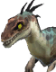
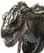
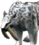
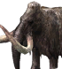

Home › Animals & Combat

Wild animals LiveAnimal temperaments, counterattacks, island-based levels, herds and alphas, estates with no wild spawns, predators hunting prey, movement/sleep, and what you get from butchering — with the source animal's name
Some sections on this page are not ready yet
Every island is home to herds of dinosaurs and prehistoric animals. Some attack the moment they see you, some run, some ignore you until they are hit. Animals have levels based on their island, sleep at night, hunt each other in front of you, and leave a carcass you can butcher for meat, leather and bones.



What you can do
- Hunt animals and butcher their carcasses into materials (see Combat)
- Capture animals to raise as pets (see Taming)
- Challenge the alpha of each island
- Watch predators hunt prey · sneak past animals sleeping at night
Animal temperaments Live
| Temperament | Behavior |
|---|---|
| Aggressive | Sees you within 8 tiles (closer if you have Stealth) → notices you in 2.5 seconds (alphas 1.5) → roars and chases · gives up once more than 32 tiles from home |
| Neutral | Ignores you until hit, then fights back |
| Skittish | Runs away when hit or when a predator comes |
- After 20 seconds out of combat, animals regenerate 0.3% health per second · Tyrannosaurus and Apatosaurus regenerate 1% per second · Allosaurus does not regenerate
- Giving up the chase far from home doesn't mean you can hit it for free — an animal you're hitting will always strike back if it can reach you, see When an animal is hit
Compsognathus on Ancora and the Safe House Live
Compsognathus — small green dinosaurs — roam in small herds of 3–4 close to where new players start, an easy first hunt
| Island | Herds | Where | Level |
|---|---|---|---|
| Ancora (starting island) | 3 herds | The bay beside the spawn valley · both banks of the stream (about 15–40 tiles from the spawn point) | 1–6 |
| Safe House | 3 new herds + the old one | Around the landing point to the north, east and south-west (about 25–35 tiles away, never walking into the camp) · the old herd to the south-east | 1–10 |
- Harmless — they never chase or attack players and run away when hit · butchering gives meat and bones (see Butchering and drops)
- On Ancora they don't block the tutorial and aren't part of it · hunted herds slowly come back to the same spots
- The first time you take a Company hunting/butchering mission on the Safe House, 3 Compsognathus pop up around you for it (once per character — see Organizations) · animals that appear this way don't respawn after dying
When an animal is hit Live
Aggressive and neutral animals that get hit turn on whoever hit them — standing in a safe zone or luring them far from home won't let you hit them for free
- If it can reach you, it strikes back: if you've hit it within the last 20 seconds and you're inside its counter range (the reach of that species' longest attack + 1 tile), it hits back every time — even when lured more than 32 tiles from home, or when you're standing in a safe zone
- Far from home: more than 32 tiles from home it won't keep chasing — step out of its counter range and it gives up (you still can't lure it any farther)
- Safe zones (12-tile radius around Harbors and arrival points): animals never step inside — hit one from inside the zone and it runs up to the edge and strikes back if it can reach you
- If you stand deeper inside where it can't reach you, it roars a warning once and just watches (it doesn't swing attacks that can't land)
- After 10 seconds of not being able to reach you, it loses interest, walks back home and its health refills to full
- Idle, wandering animals avoid walking into safe zones · any already inside slowly walk out on their own
- Aggressive animals that spotted you and gave chase on their own (you haven't hit them) still give up when you enter a safe zone
- Skittish animals still run away when hit, as in the original game (no counterattack) · stunned/collapsed animals don't attack
- Hitting from somewhere the animal can't walk to (a small island or sandbar cut off by water, a cliff or mound it can't climb — no land connected to the animal's own ground within its 2-tile attack reach around you) → the animal loses interest at once and walks back home, its health recovering at the normal rate (0.3% per second after 20 seconds out of combat — it does not snap back to full) · applies to every wild animal that chases or gets hit, alphas and rift guards included · a water gap so narrow the animal can strike from the bank doesn't count (normal fight)
Stealth Live
Your Stealth Ability (on the stats window) makes aggressive animals spot you from closer, and sleeping animals wake only when you come closer than before · the distance is divided by the original game's formula, which divides by at most about 1.1 — in practice it is about 0.7 tiles shorter, and even a little Stealth gives nearly the full effect
| Stealth | Aggressive animals see you (sunny) | Rain | Heavy rain | Sleeping animals wake when you come within |
|---|---|---|---|---|
| 0 | 8 tiles | 6.4 | 4.8 | 4 tiles |
| 24 (Stealth I–VI complete) | 7.3 tiles | 5.8 | 4.4 | 3.6 tiles |
| Stealth comes from | Amount |
|---|---|
| The Stealth I–VI skills | +4 per step (24 in total) |
| Perception stat | every 6 points above 10 = +1 |
| Gloomy Ambiance in a house (Buffs) | +25 |
| Clan Research Ecology | +10 |
| Some worn items and stealth attributes (Clothing) | Per item |
- It does not affect animals that chase you back after being hit, nor predators hunting other animals
Animal levels Live
- Every animal spawns at island level ±5 (minimum 1) — including alphas, elite leaders and animals guarding resource caches/rifts · so low-level islands no longer have alphas far above the island's level · for high-level islands see High-level islands
- Animals reborn into a herd (after dying or being captured) roll a new level in this range each time
- Health, attack and defense grow with level using the original game's formula (health ≈ species constant × (level + 24)²)
- The same species at different levels can differ a lot in toughness — that is real game data, not a bug
| Animal | Lv10 | Lv20 | Lv30 | Lv60 |
|---|---|---|---|---|
| Raptor (health) | 488 | 817 | — | — |
| Sabertooth (health) | 1,053 | 1,764 | 2,656 | 6,428 |
High-level islands Live
There is no special rule for high-level islands right now — every animal on them spawns at island level ±5 like anywhere else (no animals above Lv65)
| Island level | Animal level |
|---|---|
| 55 | 50–60 |
| 60 (the highest island level) | 55–65 |
- The highest islands that exist right now are level 55 and level 60 · so a level-60 island can have Lv61–65 animals, above the character level cap (60)
- Health, attack and defense grow with level using the same formula (see the table above)
- You can capture animals above level 60 and bond them as pets — see Taming
Unstable Index Live
On an Unstable Island the health and attack of every animal (alphas included) are multiplied by 1 + (Unstable Index − 1) × 0.25 · the level shown over its head does not change
| Unstable Index | 1 | 3 | 4 | 7 | 10 |
|---|---|---|---|---|---|
| Multiplier | ×1 | ×1.5 | ×1.75 | ×2.5 | ×3.25 |
Herds and animal numbers Live
- Public islands hold 6–12 animals per 64×64-tile area depending on terrain (see below), living in herds of up to 6 animals, using the species from that island's table
- Every island keeps at least 3 herds with ≥ 3 animals each — if hunting drops it below that, the missing herd returns to its spot after 3 minutes (aggressive) · 2 minutes (skittish) · 4 minutes (neutral)
- Safehouses, tutorial islands and peaceful islands are not topped up
- Each Unstable Island has the species and herds from its own table (original game + player tables), not the public-island set — alphas unchanged
- Areas with nobody around for 30 minutes put their herds to rest and set them up again when someone returns
Numbers by terrain Live
How many animals live in each 64×64-tile area depends on the island's terrain:
| Terrain | Animals per area | Split into herds |
|---|---|---|
| Grassland · savanna · tropical forest · temperate forest | 12 | 2 herds × 6 |
| Swamp · tundra · other terrain | 9 | a herd of 6 + a herd of 3 |
| Snow islands · desert · volcanic | 6 | 1 herd × 6 |
- Areas that already hold more than this are not culled — they thin out naturally as animals are hunted or migrate
- The 3-herd minimum per island and the alphas are unchanged
Herd homes and overcrowding Live
- A herd settling somewhere new (a herd moving in, or one added when an area opens) picks a random spot on land in the area at least 4 tiles from water and more than 8 tiles from any herd of the same species — herds no longer pile up on the shore or at the edge of the area
- If more than 6 animals of the same species are within 8 tiles of each other, the extras get split off:
- A predator nearby (within 16 tiles) → the closest one hunts the extras right away, without waiting to get hungry · the ones it kills are reborn in another herd of that species that isn't full, or at a new home (not back in the same pile)
- No predator → the extras move off to a new home on their own
- Alphas, elite leaders, fixed-spot animals, storage/rift guards and players' pets don't count · moves stay inside the same 64×64-tile area
No wild animals spawn on player estates Live
Wild animals do not spawn or settle on player, clan and personal-island estates, nor in a 12-tile band around the edge of an estate
- Animals whose home is already inside that area are moved out — silently if nobody is watching, otherwise they walk out to a new home (ones that are fighting, chasing, stunned, being hunted or eating wait for the next pass)
- A herd that is reborn after deaths comes back at the herd's old home, not wherever an animal chasing a player happens to be standing
- Walking in isn't blocked — an animal that is chasing a player can still follow into the estate · fixed-spot animals, rift/storage guards and animals spawned by missions are not covered
- A new or expanded estate takes effect within a few seconds
Herd migration Live
Wild herds don't stay put forever — in areas where players are present:
- Herds that are still whole move away from time to time (about 10–30 minutes, random per herd · one herd per area at a time) — they walk away from people toward the edge and vanish once they are at least 23 tiles from every player, then a new herd settles at a random spot in the area (appearing out of sight and walking in), which may be a species you've never seen there
- A herd that fails to leave (someone keeps following it or fighting it for too long) gives up and returns to its old home
- A herd that is wiped out is not replaced by a new herd — its members are reborn into the same herd one by one, see Population recovery · the exception is a herd wiped out while it was leaving: a new herd moves in after about 20 minutes
- Sleeping herds can migrate without walking (they vanish when nobody is nearby)
- Areas with nobody around don't rotate · returning to an area you left for a long time rotates it once when you get back
- Areas never hold more animals than the numbers by terrain
Never migrate: alphas/elite leaders · fixed-spot animals · animals guarding storages or rifts · animals that are fighting, chasing, being hunted, dazed or eating a carcass · no migration on Tamed Islands, safehouses or peaceful islands
Alphas Live
Most islands have one alpha per alpha species (e.g. the Alpha Tyrannosaurus). Alphas are always aggressive and never sleep
| Topic | Value |
|---|---|
| Health | ×2.5 of the same species (at least 2,000 + 50 × level) |
| Elite leaders | ×1.5 (at least 250 + 12 × level) |
| Respawn at the same spot | 30 minutes (elite leaders 10 minutes) |
| EXP for the kill | ×4 of a normal animal of the same level (elite leaders ×1.8) |
| Examples | Alpha Tyrannosaurus Lv60 ≈ 389,191 · Allosaurus Lv60 ≈ 96,914 · Elephantulus Lv60 = 5,000 |
- Alphas and elite leaders are island level ±5 like every other animal (Animal levels) · so the Lv60 examples above show up on level-55 to level-60 islands
- No alphas on Tamed Islands or safehouses · on Unstable Islands their health is multiplied by the Index as well
Rift and storage guards Live
On level-60 Unstable Islands, each resource cache around a crater has a guard animal — the species follows the original sheet for that cache (for example the cranberry grove on the snow island = Coelophysis · the agave grove in the desert = Tuojiangosaurus · the tropical gem mine = Kentrosaurus · the cattail grove in the swamp = Giant Rat) · its level follows island level ±5 and it gets the island's Unstable Index multiplier
Predators hunting prey Live
In areas where players are present, hungry aggressive carnivores actually chase down other animals in front of you
- They only hunt neutral/skittish animals of a different species and no higher level · alphas neither hunt nor get hunted · players' pets are never hunted
- Skittish prey runs once the predator is within 8 tiles · neutral prey fights back
- After a kill the predator eats for 20 seconds, then rests from hunting for 10 minutes · it gives up a chase after 60 seconds
- The kill leaves a carcass you can butcher, but with half the meat (leather/bones are complete) · no EXP/quest credit since you didn't kill it
- Hit a predator mid-hunt and it turns on you · a predator already chasing you won't switch to hunting animals
- At most 2 hunts at a time per area · for when predators go hunting see Hunting when hungry · no hunting on peaceful islands
Hunting when hungry Live
- Each predator gets hungry every ~15 minutes on average (random 7.5–22.5 minutes per animal) and goes after nearby prey within 16 tiles
- A predator needs about 8 bites to kill its prey · big prey fights back harder, and the predator can lose
- Anything that dies in a hunt (prey or predator) is reborn into its herd one at a time, the same as any other death — see Population recovery · the carcass can still be butchered (half the meat)
- Still at most 2 hunts at a time per area · predators rest 10 minutes after eating · sleeping predators and those chasing a player don't hunt
Movement and sleep Live
- Running: animals use their real run animation when chasing or fleeing (same speed as before, 0.925 tiles/second · walking 0.575)
- Sleeping: a game day lasts 48 minutes: dawn (4:30–8) · day (8–17) · dusk (17–21) · night (21–4:30)
- Night animals (wolves, sabertooths, etc.) are awake at dusk and night · everything else is awake except at night
- Outside its waking hours each animal has a 45% chance to be asleep (re-rolled daily) · sleeping animals don't wander, chase or hunt
- They wake if you come within 4 tiles (3 tiles with Stealth) or hit them, then stay awake for 2 minutes · alphas and water animals never sleep
- Flinching: every hit plays a short flinch (visual only) · only a critical hit or a full stagger gauge interrupts the attack an animal is winding up
- Roaring: aggressive animals roar the first time they spot you (standing still ≤ 2 seconds) before chasing · alphas roar when a fight starts · once per 60 seconds per animal · no damage · some species have no roar (Sabertooth, Mammoth, Allosaurus, etc.)
- Stunned/collapsed: see Taming
Butchering and drops Live
- A dead animal leaves a carcass for 15 minutes (each butchering resets the timer)
- Tap the carcass → choose a part to butcher, one piece at a time until it's empty · parts you haven't unlocked with butchering skills are greyed out
- Item level = animal level + your Butchering skill bonus, but never above your character level
| Animal | Carcass parts (per carcass) |
|---|---|
| Compsognathus | Meat 1–2 · Carnivore Leg Bone 1–2 · Leather 1 · Teeth 1 |
| Raptor | Meat 2–3 · Carnivore Leg Bone 1–2 · Leather 1–2 · Teeth 1 |
| Triceratops | Meat 5–8 · Herbivore Rib 2–3 · Skull 1 · Horn 1–2 · Leather 2–3 · Large Leg Bone 2–3 |
| Mammoth | Meat 7–10 · Herbivore Leg Bone 2–3 · Herbivore Rib 2–3 · Skull 1 · Ivory 1–2 · Pelt 2–3 · Fat 1–2 · Large Leg Bone 2–3 · Intestine 1–2 |
| Tyrannosaurus | Meat 8–12 · Carnivore Leg Bone 3–4 · Carnivore Rib 3–4 · Large Skull 1 · Leather 3–4 · Teeth 1 · Large Leg Bone 1–2 |
- Parts that were broken when the animal died give half (meat excluded) · carcasses left by predators give half the meat
Source names on butchered materials Not ready
Newly butchered materials (leather, meat, bones, teeth…) and materials from animals caught in traps carry the name of the animal they came from, for example «Tyrannosaurus Leather», «Ankylosaurus Rib», «Mammoth Pelt» — named by the animal's drop table as in the original game (a Chasmosaurus uses the Bonusaurus table, so it gives «Bonusaurus Horn»)
- You can search the market by animal name (typing «Tyranno» finds Tyrannosaurus Leather)
- Each species passes its own species traits to its materials, and some pieces unlock recipes that used to be impossible: Brachio Tooth Necklace · White Wolf Fur Hat (dried White Direwolf leather) · tanning with White Sabertooth oil · Compy Beanbag · Andrewsarchus Leather Rug
- Compsognathus now also drop 1 leather and 1 tooth, and Brachiosaurus drop 1–2 teeth (this lets those recipes be crafted)
- Processed materials keep their usual names · old items in your bag with no animal data keep their old neutral name — nothing is guessed after the fact
- Parts from trapped animals get the name, the species traits and the yellow/green tag rolls just like animals you butcher yourself
The names you will see in game (same table as above):
| Animal | Carcass parts (per carcass) |
|---|---|
| Compsognathus | Compsognathus Meat 1–2 · Compsognathus Leg Bone 1–2 · Compsognathus Leather 1 · Compsognathus Tooth 1 |
| Raptor | Raptor Meat 2–3 · Raptor Leg Bone 1–2 · Raptor Leather 1–2 · Raptor Tooth 1 |
| Triceratops | Triceratops Meat 5–8 · Triceratops Rib 2–3 · Triceratops Skull 1 · Triceratops Horn 1–2 · Triceratops Leather 2–3 · Large Triceratops Leg Bone 2–3 |
| Mammoth | Mammoth Meat 7–10 · Mammoth Leg Bone 2–3 · Mammoth Rib 2–3 · Mammoth Skull 1 · Mammoth Ivory 1–2 · Mammoth Pelt 2–3 · Mammoth Fat 1–2 · Large Mammoth Leg Bone 2–3 · Intestine 1–2 |
| Tyrannosaurus | Tyrannosaurus Meat 8–12 · Tyrannosaurus Leg Bone 3–4 · Tyrannosaurus Rib 3–4 · Large Tyrannosaurus Skull 1 · Tyrannosaurus Leather 3–4 · Tyrannosaurus Tooth 1 · Large Tyrannosaurus Leg Bone 1–2 |
Population recovery Live
Herd animals that die — killed by a player, eaten by a predator, captured or caught in a trap — don't pop back right away; they are reborn into the same herd one at a time:
- Wait = about 3.3 minutes × the number of animals the herd is missing (20 minutes ÷ 6) — missing 1 waits 3.3 minutes · missing 2 waits 6.7 minutes · … · a whole herd of 6 wiped out waits 20 minutes before the first one returns
- After each birth the timer restarts based on how many are still missing · more deaths while waiting restart it too — so small remnants come back slowly, and a wiped-out herd of 6 takes about 70 minutes to fill up again
- If players are nearby, the newcomer appears out of sight (at least 23 tiles from every player, on the herd's side) and walks into the herd · with nobody around it appears right in the herd
- Alphas/elite leaders respawn on their own timers (Alphas) · the 3-herds-per-island minimum always applies